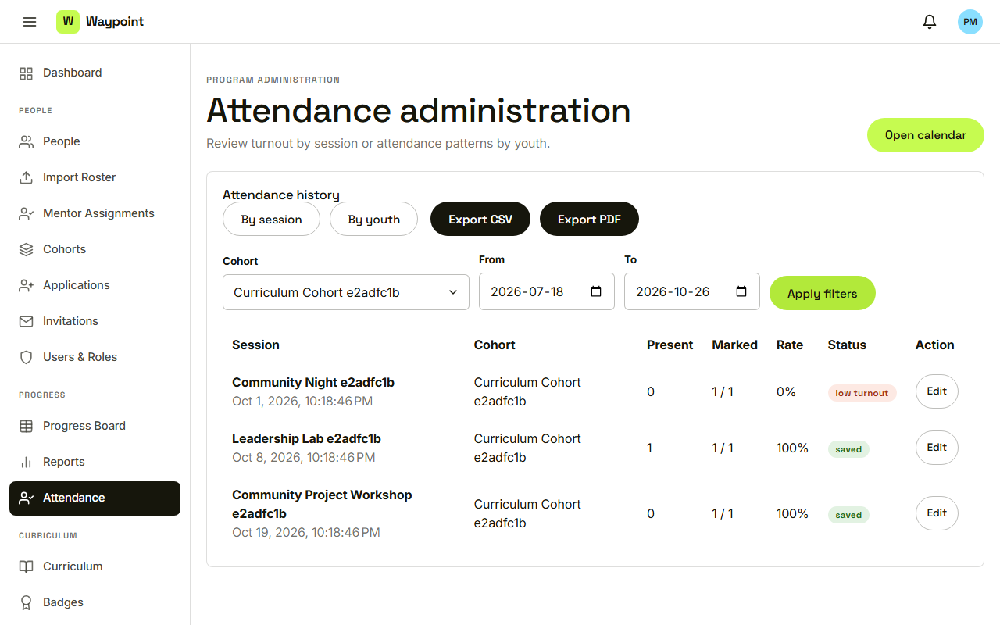
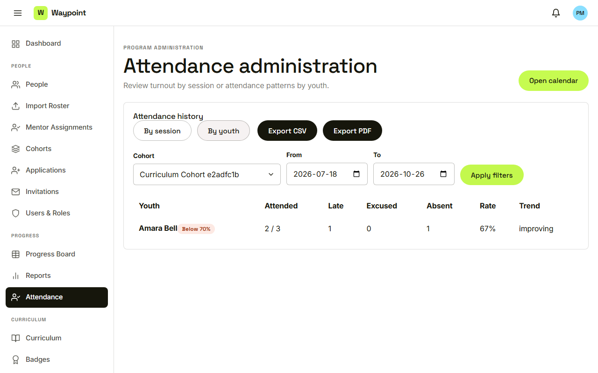

Waypoint · Video 072
Reviewing attendance
By session, by youth, filtered and exported
One row for each session

Present, marked, rate and status
One row for each youth

Counts, rate, trend and a flag below seventy percent
Filters and exports
Export CSV and export PDF follow the filters
Things to remember
By session: present count, rate and status
By youth: counts, rate, trend and a flag below seventy percent
Filters recompute everything for that scope
Exports follow the filters